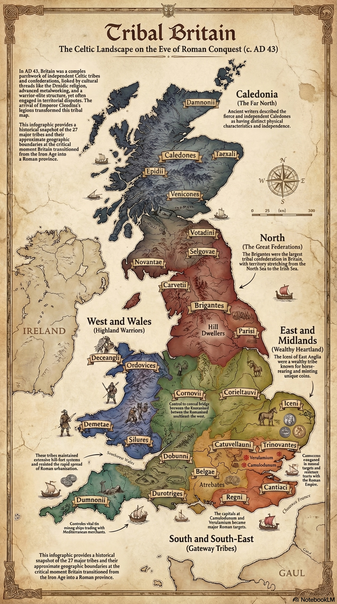
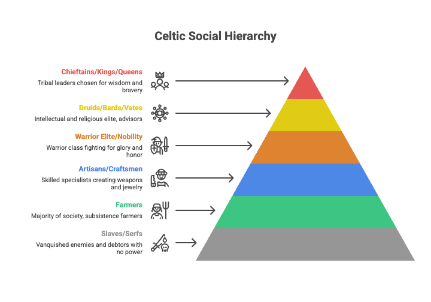

Lesson 2
Who were the Celtic peoples of Iron Age Britain, how was their society organised, and what made the Iceni tribe of East Anglia distinctive?
~28 min
AH11-1: Describes the nature of continuity and change in the ancient world
AH11-4: Accounts for the different perspectives of individuals and groups
AH11-6: Analyses and interprets different types of sources for evidence to support an historical account or argument
To understand the origins, culture, and society of the Celtic peoples, with a focus on the Iceni tribe of East Anglia and the role of Druids in Celtic life.
0 of 4 criteria met
By the end of this lesson, I can:
Teacher — Sharing LISC
Display the learning intention and success criteria on the board. Read them aloud and ask students to identify the key verbs (describe, explain, analyse, evaluate). This helps students understand the levels of thinking expected. Check understanding: “Can someone put the learning intention into their own words?” (cold call).
Before we begin, take a moment to think about what you already know — or think you know — about the Celts and Iron Age Britain. There are no wrong answers here.
How much do you already know about the Celts?
Teacher — Activating Prior Knowledge
Use think-pair-share: “Discuss with your partner what comes to mind when you hear the word ‘Celtic.’” (60 seconds). Then cold call 3–4 pairs. Accept all responses without correction — the purpose is retrieval, not assessment. Note any misconceptions (e.g., “the Celts were one country”) to return to later.
Prior knowledge gauge: “Thumbs up if you’ve heard the word ‘Celtic’ before today, thumbs down if it’s completely new.” This is not a CFU — it gauges the class baseline to help you pitch the lesson.
Teacher — Modelling (‘I Do’)
Model with a key misconception before reading the text: “A common mistake is to think the Celts were one country or one people, like the Romans were one empire. In fact, the Celts were hundreds of separate tribes spread across Europe who happened to share similar languages, art, and religious practices — a bit like how many different countries today speak English but are not one nation.”
Read the first paragraph aloud, then pause to check understanding before continuing.
The Celts were not a single nation or unified empire. They were a diverse collection of tribal peoples who shared common linguistic, artistic, and religious traditions, spreading across much of Iron Age Europe from approximately 1200 BC. At their greatest extent, Celtic cultures stretched from the Iberian Peninsula in the west to modern Turkey (ancient Galatia) in the east, and from the British Isles and Ireland in the north to northern Italy in the south.
The Celts are defined primarily by their languages (a family of languages that includes Welsh, Irish, Scottish Gaelic, Breton, and Cornish), their distinctive artistic styles, and their shared religious practices. They were not, however, a politically unified group — Celtic-speaking peoples were organised into hundreds of individual tribes, each with its own king or chieftain, laws, and identity.
Much of what we know about the Celts comes from two problematic sources: Roman and Greek writing, which portrayed them through the lens of cultural bias, and archaeology, which can tell us about material culture but not thoughts, beliefs, or political organisation. There are no surviving Celtic written records from this period, which means our picture is always partial.

Teacher — CFU
Use cold call. If they answer incorrectly, redirect: “Who can help? What does the text say the Celts shared in common?” Aim for 80%+ success before moving on.
Which statement best describes the Celtic peoples?
Teacher — Guided Reading (‘We Do’)
Display the table below on the board. Walk through each phase together, asking students to identify one key feature for each. Use think-pair-share after reading: “Turn to your partner and identify the most significant change between these three phases.” (60 seconds). Cold call 2–3 pairs.
Archaeologists divide Celtic cultural development into three major phases, each named after key archaeological sites:
| Phase | Date | Key Features |
|---|---|---|
| Urnfield | c. 1200–700 BC | Cremation burials in urns placed in large cemeteries. Emerging social hierarchies with richer burials containing weapons and ornaments. Spread across central Europe. |
| Hallstatt | c. 700–500 BC | Named after a salt-mining town in modern Austria. Advanced ironworking. Wealthy chieftains buried with chariots, gold jewellery, and imported Mediterranean luxury items. Strong trade with Greek and Etruscan cities. |
| La Tène | c. 500 BC–AD 100 | Peak of Celtic culture, named after a site in modern Switzerland. Highly distinctive curvilinear art featuring spirals, interlocking patterns, and stylised animal forms. Found on swords, shields, torcs, brooches, and pottery across the Celtic world. |
Which phase of Celtic culture is characterised by distinctive curvilinear art featuring spirals and interlocking patterns?
Match each Celtic cultural phase to its key feature:
Teacher — Modelling: I Do, We Do, You Do
I Do: Read the first paragraph aloud and model annotation — “I’m going to underline the key features of Celtic society: tribal, hierarchical, warrior aristocracy at the top.”
We Do: Read the Druids section together and ask: “What three roles did Druids perform?” (cold call)
You Do: Students read the primary source independently and identify one thing it reveals about Celtic society and one thing it reveals about Roman attitudes.
Celtic society was organised around the tribe (a kinship group bound by loyalty to a shared ancestor and a common territory) rather than cities or nation-states. Tribes ranged in size from a few thousand to tens of thousands of people and were led by a chieftain or king chosen — at least theoretically — for personal qualities including bravery, wisdom, and generosity.
Celtic society was hierarchical. At the top were the warrior aristocracy: nobles who owned land, horses, and weapons and who demonstrated their status through feasting, gift-giving, and prowess in battle. Below them were farmers and craftspeople, and at the bottom were slaves (often prisoners of war or debtors). Women occupied a complex position in Celtic society: they could own property, enter contracts, and — in exceptional cases — lead their tribes in warfare.
The three most important social roles beyond the warrior elite were the Druids (religious leaders and judges), the Bards (poets and musicians who preserved oral tradition), and the Vates (seers and ritual specialists). These roles were separate from political authority but could exercise enormous influence over it.

The Druids were the intellectual and spiritual elite of Celtic society. They served simultaneously as priests conducting religious rituals, judges interpreting customary law, educators training the next generation of nobles, and advisors to kings. Their authority transcended tribal boundaries: a Druid could mediate between hostile tribes and had the power to stop battles by walking between the lines of warriors.
Druidic training was extraordinarily demanding. Caesar reported that students spent up to twenty years memorising the knowledge required — because the Druids deliberately refused to commit their teaching to writing. This choice was not a sign of backwardness but of philosophy: the Druids believed that committing sacred knowledge to writing would make it accessible to the unworthy and reduce the discipline required to truly understand it. All of their laws, religious teachings, cosmological beliefs, and historical knowledge were transmitted orally, from teacher to student, in verse form to aid memorisation.
Roman accounts describe Druidic rituals involving human sacrifice, sacred groves, and animal sacrifices. Modern scholars treat these accounts with caution — Romans had strong political motivations to portray the Druids as barbaric, since destroying Druidic authority was a key component of their strategy to suppress Celtic resistance. The Romans systematically targeted Druidic centres, most famously attacking the sacred island of Mona (modern Anglesey, Wales) in AD 60 — the very campaign that drew Suetonius Paulinus away from eastern Britain when Boudicca’s revolt began.
Primary Source
Provenance: Julius Caesar, De Bello Gallico (The Gallic Wars), Book VI, Chapters 13–14. Written c. 52–51 BC. Caesar was a Roman general and politician who conquered Gaul (modern France). His account of the Druids is the most detailed ancient description we possess, though it reflects his perspective as a conqueror seeking to justify Roman expansion.
“The Druids are concerned with divine worship, the due performance of sacrifices, private or public, and the interpretation of ritual questions… They do not think it proper to commit these utterances to writing… They are said to commit to memory immense amounts of poetry, and so some of them continue their studies for twenty years. They teach that souls do not die, but after death pass from one body to another; and this they regard as the strongest incentive to valour, since the fear of death is thereby removed.”
Historian’s note: Caesar’s account is valuable as one of the earliest and most detailed descriptions of Druidic practice. However, his purpose was to portray the Celts as both impressive and in need of Roman “civilisation.” His claim that Druids performed human sacrifice should be treated cautiously, as this was a common Roman accusation used to justify military campaigns against non-Roman peoples.
Teacher — CFU
Gesture voting: “Hold up A, B, C, or D with your fingers. On three — one, two, three — show me.” If fewer than 80% show B, re-teach using Caesar’s account as evidence.
Why did the Druids refuse to write down their knowledge?
Teacher — Independent Reading (‘You Do’)
Students read this section independently. After reading, use think-pair-share: “Turn to your partner and explain two things that made the Iceni distinctive compared to other Celtic tribes.” (90 seconds). Cold call 2–3 pairs to share.
Key misconception to address: Students may assume “voluntarily joined our alliance” means the Iceni were happy to be allied with Rome. Emphasise that “voluntary” in a context of Roman military dominance is a relative term.
The Iceni were a Celtic tribe who inhabited what is now Norfolk, Suffolk, and parts of Cambridgeshire in eastern Britain. Archaeological evidence, including distinctive coinage featuring horses and boar symbols, confirms a strong cultural identity and relatively prosperous economy based on agriculture, animal husbandry, and trade.
Their probable capital, or at least a major settlement, was Venta Icenorum (modern Caistor St Edmund, near Norwich). Archaeological excavations there have revealed evidence of pre-Roman occupation, though the site was substantially developed in the Roman period. Significant hoards of Iceni coins have been found across Norfolk, suggesting a well-organised tribal economy.
The Iceni were known for their fierce independence. Unlike many tribes in south-eastern Britain who had close trading relationships with Rome before the conquest, the Iceni maintained greater cultural separation. This independence would later make the Roman decision to annexe their territory — and the way in which it was done — all the more catastrophic.
Primary Source
Provenance: Tacitus, Annals, Book XII, Chapter 31. Written c. AD 98. Tacitus was a Roman senator and historian. His father-in-law Agricola served as governor of Britain, giving Tacitus access to personal accounts of British affairs.
“In the same year [AD 47], the Iceni… took up arms. The Iceni had not been conquered by force of arms, but had voluntarily joined our alliance, and accordingly had been left in possession of their territory. On the order of Ostorius [the Roman governor] that they should surrender their arms, the Iceni refused to comply, and called to their aid other tribes not yet broken in by subjugation.”
Historian’s note: This passage is significant because it shows that the Iceni had a prior history of resisting Roman authority even before Boudicca’s revolt. It also reveals that Rome expected client tribes to surrender their weapons — a significant violation of the client-kingdom agreement. Tacitus’s use of the phrase “not yet broken in by subjugation” reveals the Roman attitude toward Celtic peoples.
According to Tacitus, why did the Iceni revolt in AD 47?
Choose the level that challenges you, or work through all three.
Teacher — Independent Practice (‘You Do’)
Students should attempt these only after a high success rate on the CFU questions. Direct all students to Foundation first.
Exit ticket: Students answer Foundation Q2 on a sticky note before leaving: “Name two modern counties that correspond to Iceni territory.”
Identify and describe
Analyse and explain
Evaluate and debate
Click each card to reveal its definition.
Return to the success criteria from the start of this lesson. Can you now tick off each one? If any remain unticked, scroll back and review the relevant section.
Teacher — Review of Learning
Self-assessment for each criterion: “Thumbs up if confident, sideways if partly there, down if you need more help.”
Exit ticket: “On a sticky note, write one reason why we need to be careful when using Roman sources to learn about the Celts.” Collect as students leave.
How confident do you feel about this lesson’s content?